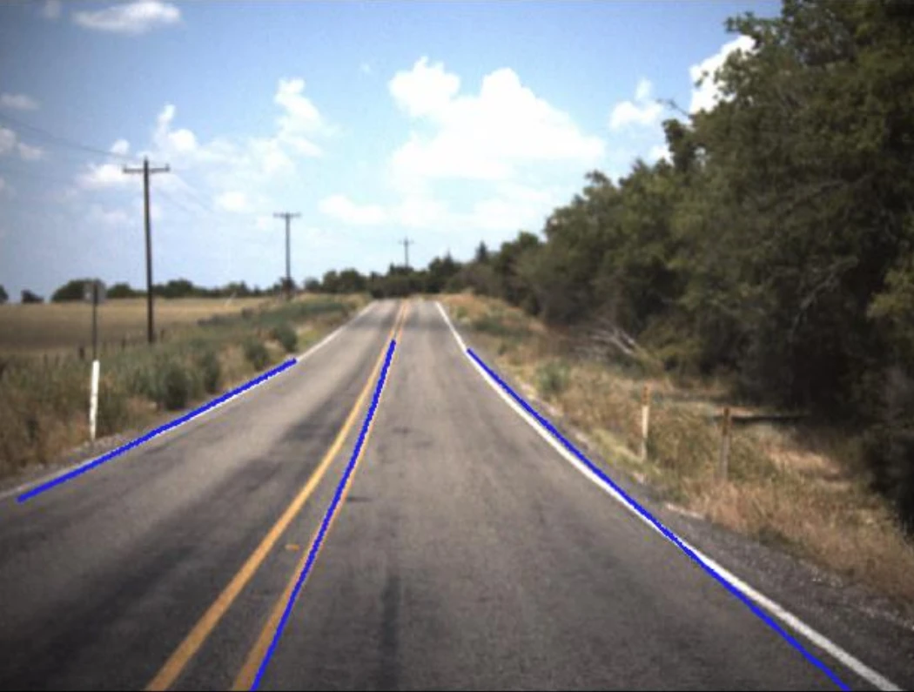
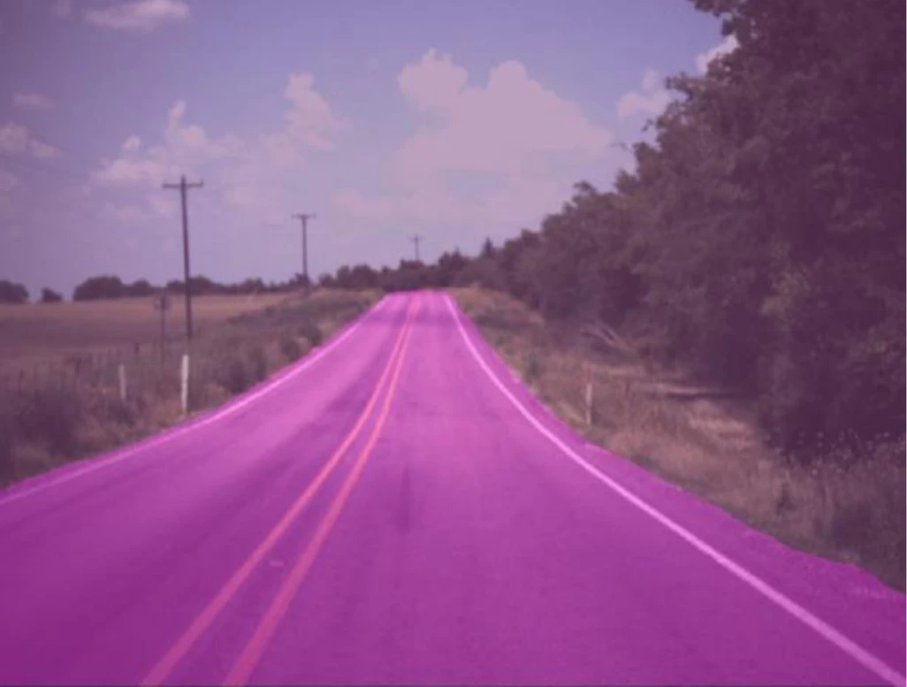

Autonomous Vehicles for All · Perception & planning
Perception and planning for rural roads
Road perception, Frenet-frame trajectory planning, and visual-representation analysis for autonomous driving in environments with weak lane markings and unreliable visibility.

Research focus
My work in Autonomous Vehicles for All examined how uncertain road boundaries affect trajectory selection. A complementary study explored redundancy in the visual inputs of a vision-language-action (VLA) driving model.
Methods and contributions
- Road-relative trajectory planning. Developed a Frenet-frame planner that separates progress along the road from lateral displacement. Generated candidate offsets and speed profiles, then selected trajectories using curvature constraints and a weighted cost function.
- Perception and sensor alignment. Tuned CLRerNet lane detection and Segment Anything Model (SAM) drivable-area masks. Aligned camera, LiDAR, and odometry data in a common frame to connect road-boundary estimates with planning.
- Sensitivity to degraded inputs. Examined glare, low light, dust, sensor dropout, and timing jitter using recorded ROS data and simulation. Refined detection thresholds and temporal smoothing to maintain lane continuity.
- Visual representation analysis. Applied Principal Component Analysis (PCA) to OpenDriveVLA features from 6,019 nuScenes samples. About 10 components retained 80% of scene-token variance and 97% of map-token variance, revealing a compact representation for further token-reduction studies.
Results
This work connected perception quality to feasible motion and identified visual redundancy relevant to more efficient VLA inference.
A closer look




Read more
Vehicle and baseline perception images courtesy of the AVA team’s technical overview.